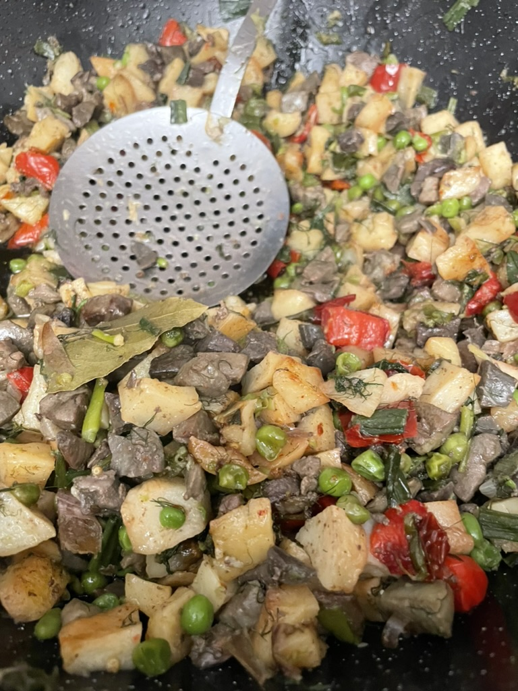
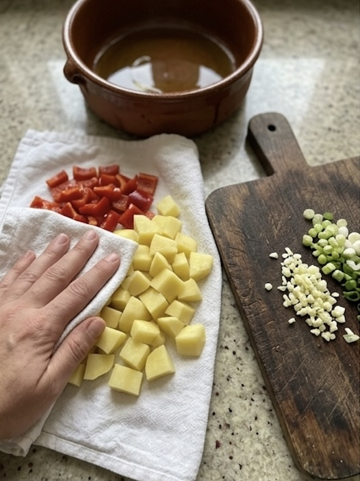
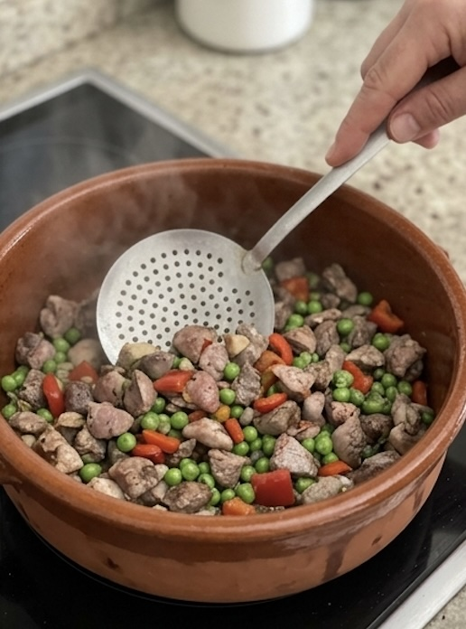
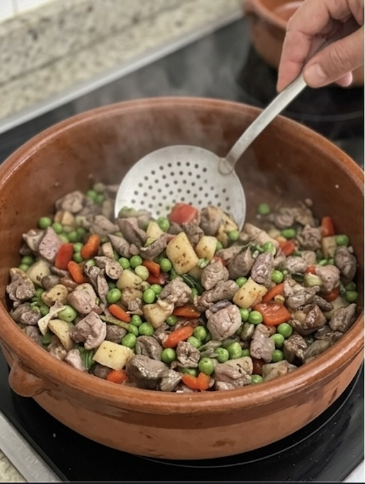

Frit mallorquí (de mè)

Ingredients (per 4 racions aprox)
- 1 paquet de frit de mè (Mercadona)
- 1 prebe vermell
- 250 g de pèsols
- 2 manats de grells
- Fonoll (al gust)
- 1 cabeça d’alls
- 1 kg de patates per fregir
- Unes 6 fulles de llorer, xapades per la meitat
- 2 prebes coents de cirereta o caiena
Elaboració
(A cada passa, afegiu sal al gust.)
1. Tallar i fregir les patates
- Tallau ses patates en daus i fregiu-les. Reservau-les.
2. Preparar la carn
- Tallau sa carn en bossins petits (lleveu el greix, etc.).
3. Fregir els alls, llorer i prebes coents
- A una greixonera, fregiu es alls amb es llorer i es prebes coents.
4. Cuinar la carn
- Després, afegiu-hi sa carn i cuinau-la durant una mitja hora a foc mig, remenant constantment.
5. Afegir les patates
- Afegiu ses patates a sa greixonera i mesclau-ho bé.
6. Fregir el prebe vermell
- En una altra paella, fregiu es prebe vermell amb una mica de llorer i afegiu-lo a sa greixonera.
7. Saltejar pèsols, grells i fonoll
- En una altra paella (o sa mateixa, amb manco oli), saltejau es pèsols i es grells; afegiu-hi es fonoll durant es darrers 5 minuts de cocció.
8. Integrar-ho tot
- Afegiu-ho tot a sa greixonera i remenau bé fins que quedi tot ben integrat.





